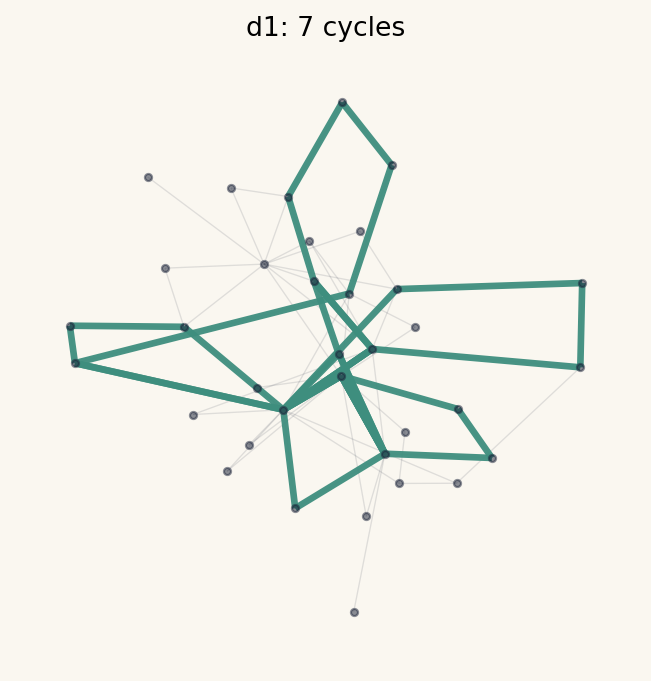
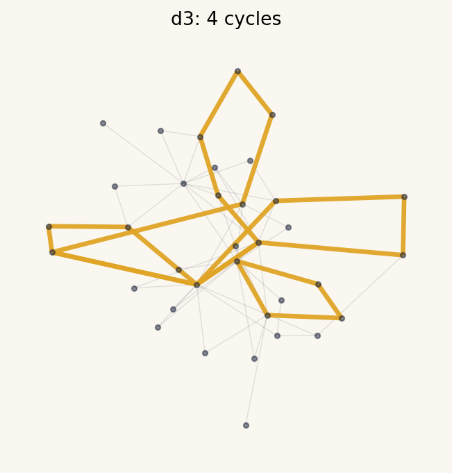
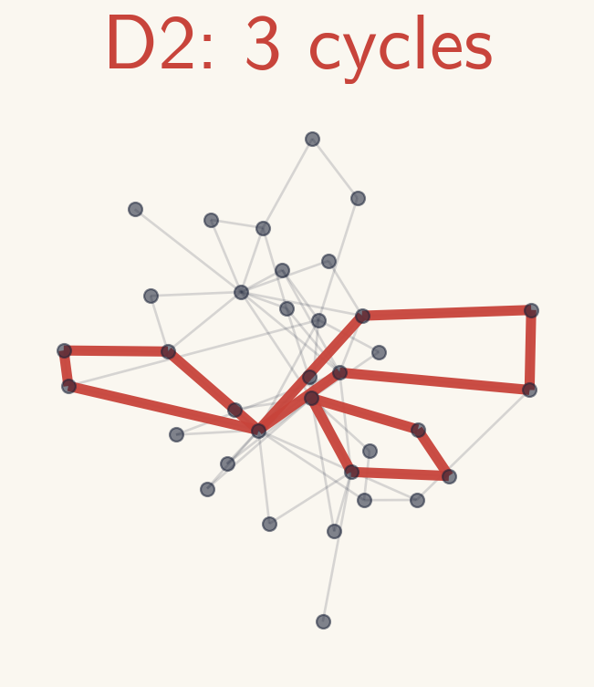

Persistent homology (PH) reveals hidden topological structure in data, including music. Applying PH requires a distance between graph nodes, and that choice is not unique. We study music graphs with predefined weights and examine three path-based distances, showing how they reshape persistence barcodes, diagrams, and birth/death edges. We prove an inclusion relation in one-dimensional persistent homology among the three definitions and verify it on real Korean court music.
$d_1$ min-edge path, $d_2$ min-weight path (the only metric), $d_3$ hybrid.
$\textcolor{#C8443B}{d_2}\le\textcolor{#E0A526}{d_3}\le\textcolor{#3E8E7E}{d_1}$, lifting to a barcode injection $B_2\subseteq B_3\subseteq B_1$.
Exactly reproduces the paper's Table 1 on real geomungo pieces.
Each node is a (pitch, duration) pair; an edge joins consecutive notes; the weight is $1/(\text{co-occurrence count})$. On this graph we define three distances:
For every pair of nodes, $$\textcolor{#C8443B}{d_2(v,w)}\le\textcolor{#E0A526}{d_3(v,w)}\le\textcolor{#3E8E7E}{d_1(v,w)}.$$ This carries to one-dimensional persistent homology: the birth edges satisfy $B_2\subseteq B_3\subseteq B_1$, giving injections $$\mathrm{bcd}_1(\textcolor{#C8443B}{d_2})\hookrightarrow\mathrm{bcd}_1(\textcolor{#E0A526}{d_3})\hookrightarrow\mathrm{bcd}_1(\textcolor{#3E8E7E}{d_1}).$$ Every cycle keeps its birth time; its lifespan only grows from $d_2$ to $d_1$, and cycles can only be added.
Pick a piece. For each distance you see its distance-matrix heatmap, $H_1$ barcode, and the music network with surviving cycles highlighted. Watch cycles thin out $d_1$ $\to$ $d_3$ $\to$ $d_2$.
On Sanghyeondodeuri (geomungo), sweeping the distance thins the $H_1$ barcode: $|\mathrm{bcd}_1(d_1)|{=}7 \to |\mathrm{bcd}_1(d_3)|{=}4 \to |\mathrm{bcd}_1(d_2)|{=}3$ — only the robust core loops survive.



Each distance's surviving $H_1$ cycles of Sanghyeondodeuri, looped to the same length and rendered with real geomungo samples. As $d_1\to d_3\to d_2$, fewer cycles means the core motif repeats more --- sparser and more insistent.
Direct cycle sonification — the surviving loops sounded as-is with real geomungo samples (National Gugak Center · Digitaleum, KOGL Type-1). Below, the same cycles drive actual composition.
Beyond replaying the cycles, we compose new geomungo pieces from the cycle structure of Sanghyeondodeuri (geomungo) — the same 189-note seed piece analysed above ($|\mathrm{bcd}_1| = 7,4,3$) — following the neural composition algorithm (Algorithm B) of Tran, Lee & Jung (2024), run separately for each distance. A different distance gives different surviving cycles and a different "overlap" timeline, so the same machinery composes a different piece per distance: distance is a knob on the composition itself.
An MLP learns to map the Overlap matrix to the note sequence from the single piece (periodic-extension training), then composes from a generated seed Overlap matrix. Steps anchored by a surviving cycle keep the learned note; the gaps improvise — so $d_2$, with the fewest surviving cycles, departs from the original most.
~1-min excerpts. Algorithm: Tran, Lee & Jung, Machine Composition of Korean Music via TDA and ANN, J. Math. Music 18(1):20–41, 2024 (arXiv:2203.15468) — here generalized to the three distances. Rendered with real geomungo samples (National Gugak Center · Digitaleum, KOGL Type-1).
Pick a preset or drop a MIDI / MusicXML file, and your browser runs the whole pipeline — graph → three distances → $H_1$ cycles → Overlap matrix → composition — then plays the result on a real gugak instrument of your choice (geomungo · gayageum · daegeum · piri · haegeum). Everything runs in your browser; nothing is uploaded.
Training takes a few seconds. The first ~200 notes are used, and clips are ~1-minute excerpts. Uploaded files may give different cycle counts than the presets. Instrument samples: National Gugak Center · Digitaleum (KOGL Type-1); piano: Salamander Grand Piano (A. Holm, CC-BY 3.0).
Published in Journal of Mathematics and Music (2025) · DOI 10.1080/17459737.2025.2568844 · open-access preprint arXiv:2506.13595
@article{Heo_2025,
title = {{Persistent Homology of Music Network with Three Different Distances}},
author = {Heo, Eunwoo and Choi, Byeongchan and Kim, Myung Ock and Tran, Mai Lan and Jung, Jae-Hun},
journal = {Journal of Mathematics and Music},
publisher = {Informa UK Limited},
year = {2025},
pages = {1--33},
doi = {10.1080/17459737.2025.2568844},
issn = {1745-9745},
url = {https://doi.org/10.1080/17459737.2025.2568844}
}